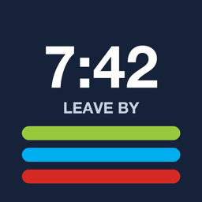

Leave By support
Know exactly when to leave for your Auckland train.
Contact
Questions, problems or ideas? Email hawkers.erasure_2d@icloud.com. Please include your iPhone model, iOS version and the journey you were looking at.
Common questions
The first launch takes a while
Leave By downloads Auckland’s full public timetable once and builds it into a fast index on your phone. That takes about a minute; after that it works offline and refreshes the timetable in the background.
How does it work out when I need to leave?
It takes the next departure from your stop, then subtracts your travel time to the stop (walking or driving, via Apple Maps from your current location), a platform allowance and your buffer. You can change these in Settings and per journey.
Does it show live delays?
Leave By works from the published timetable. If you have your own Auckland Transport developer key, you can add it under Settings → Live delays to apply live delays and cancellations.
The widget or watch looks out of date
Open the app once to refresh. iOS limits how often widgets update; the times count down on their own between refreshes.
Location permission
Location is optional. Without it, Leave By uses a fixed travel time you set in Settings.
Leave By is an independent app and isn’t made or endorsed by Auckland Transport. Contains timetable data from Auckland Transport, licensed under CC BY 4.0.